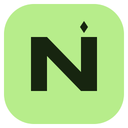
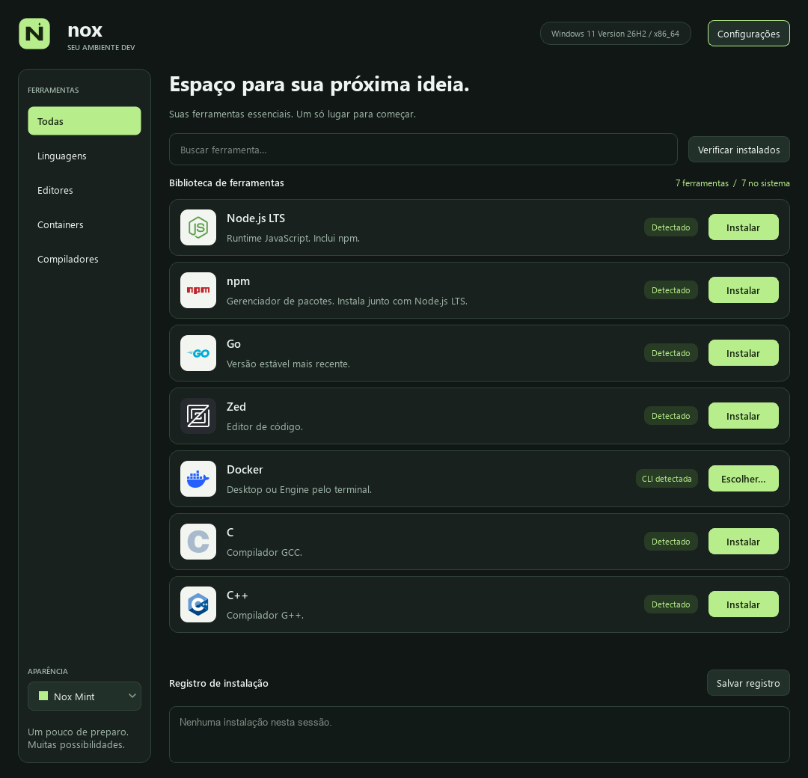

Windows
x64 · Instalador .exeAbra o instalador e siga as etapas. As ferramentas são instaladas pelo WinGet.
Baixar para Windows Requer WinGet. O instalador não tem assinatura digital.
nox GitHubUM NOVO COMEÇO PARA SEU AMBIENTE DEV
Do primeiro runtime ao próximo container. Suas ferramentas de desenvolvimento, reunidas em um app feito para simplificar o começo.

O ESSENCIAL, BEM AQUI
Busque, veja o que já está no seu sistema e instale o que falta. Sem sair procurando cada comando.
A disponibilidade de cada instalação depende do sistema. O Nox mostra os comandos e os requisitos antes de você confirmar.
DO DOWNLOAD AO PRIMEIRO COMMIT
Você escolhe o que instalar.
O Nox organiza o caminho.
Explore as categorias ou use a busca. O Nox indica quais executáveis já encontrou no seu sistema.
Leia os comandos e os requisitos. A instalação só começa depois da sua confirmação.
Confira a saída no registro de instalação e salve o log se precisar. Depois, abra um novo terminal e comece.
VAMOS COMEÇAR?
Escolha seu sistema e encontre sua próxima ferramenta.
Abra o instalador e siga as etapas. As ferramentas são instaladas pelo WinGet.
Baixar para Windows Requer WinGet. O instalador não tem assinatura digital.Baixe, permita a execução e abra. Use o app como usuário normal, sem sudo.
Baixar para Linux glibc 2.35+ · Também em .tar.gz ↗chmod +x Nox-Linux-x86_64.AppImage &&
./Nox-Linux-x86_64.AppImage
Execute no terminal:
./Nox-Linux-x86_64.AppImage --appimage-extract-and-run.
Você também pode usar o pacote .tar.gz com as bibliotecas Qt 6 do
sistema.
Conexão com a internet necessária para instalar ferramentas. Debian/Ubuntu, Fedora, Arch/CachyOS e openSUSE têm planos de instalação disponíveis. Confira os requisitos e as limitações ↗